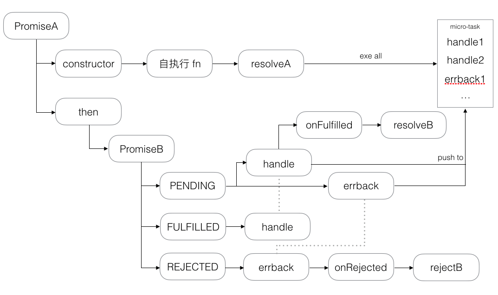
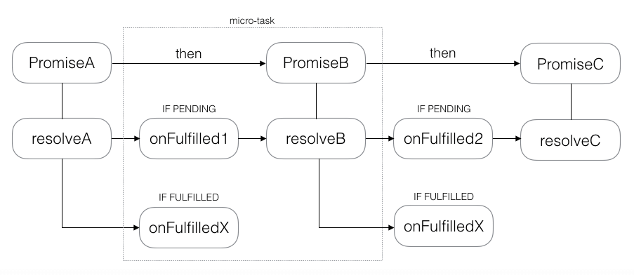

Promise原理浅析
流程图


图片1描述了`promise`的内部基本流程，图片2描述`promise`链式调用的基本流程（以成功为例），而其他api都是基于这个简单的流程拓展出来的。
由于状态不可逆，所以`then`必须返回新的`promise`，来实现链式调用中，下一个`then`的状态重新从`PENDING`到`FULFILLED`or`REJECTED`的流程重走。
`PENDING`状态下，`then`方法中的回调任务会被加到微任务队列中，直到该`promise`进行`resolve`的时候，会把刚刚加入微任务队列中所有的任务拿出来依次执行，并触发下一个`promise`的`resolve`。
每执行一个宏任务（主流程、`setTimeout`、`setInterval`等），都会把所有的微任务（promise）执行完，然后依此重复。
`FULFILLED`或`REJECTED`状态下，`then`方法中，对应的回调会马上触发（把添加到微任务队列中的任务拿出来执行）。